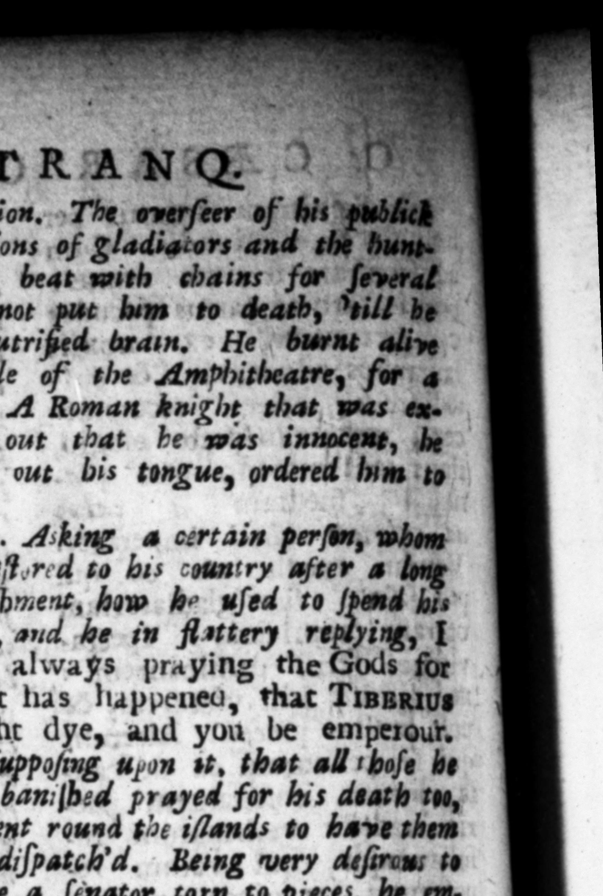

= : is : C.:SUET,, DRA daxĩt . abfeiſlaque lingua, 15 verſation, The overſeer of his "ptblich | diverſcons of gladiators and the bunt ng M ul beaſts," he ordered to b. beat with chains for ſeveral raxius induxit. ; days totether in bis ht, and was” fend with the ſten:b 'of his. putrißed brain, He | burnt alive the writer of 4 farce, in the merry "verſe with a double meaning. A Roman knight that was an. poſed by him to wild beaſts, , crying ont that be was innocens, the feteh'd him back again, and cutting out bis tongue, ordered um 10 be brought again. | 28. *Revocaium quendam à vetere exſilio ſcifciratus, quitnam ibi facere conſueſſet, reſpondente eo per 4dulationem, Deus ſemper oravi, ut quod event, perinet | Tiberius, & tu imperares inans ibi quoque exſules fuos mortem imprecari, miſit | circum intulas, qui univerſos conttucidarent. Cum diſcerpi ſenatarem cohcupiſſec, ſubornavit qui ingredientem curiam, repente hoſtem publicum appellantes, invaderent, gras» ptiiiſque confoſfum lacerandum czteris traderent, Nec ante fatiatus eſt quam membia & artus & viſcera hominis tracta per vicos, atque ante ſe congeſta vidiſſet. 29. Immaniſſima facta auge bat atrocitate verborum. Nihil magis in natura ſus laudare ſe ac probare dicebat gueam, ut ipſtus verbo utar * F — z adtarce icy, Monenti An. toniæ avie, ranquam parum eſſet non obedire, Memento, ait, Omnia mihi & homini licere. Trucidaturus ſratrem, quem meru venenorum premuniri medicamentis ſuſpicabatur, Antidietum, inquit, adverſus Ceſarem * relegatis ſcroribus, non ſolum inſulas habere ſe, ſed etiam gladios minabatur. Pretorium virum ex ſeceſſu Anticyre, quam valetudinis cauſa petierat, propagari fibi commeatum ſæpius deſiderantem, cum mandaſſet Was always praying the pleyed ſome t call him à publtck engand deliver bim to the reſt io tear - againlt Cæſar. And when he bani[Nes mitale of the » Amphitheatre, fur 4 23. Ali a certain perſon, whom he reſt.r:d to bis country after 2 1 bani ſhment, hom he wſed to 85 time, and he in flattery replying, Ag $ What has happened, that TANGO might dye, and you be emperour. He e uon it, that all thoſe be had baniſh:d prayed for his death 100, he ſent round the i/lands to have them all diſpatch'd. Being very defirans to aye a ſenator torn to pieces, be emmy, * on. him, as he entered the kouſe, and flab him ih their files, in piece. My was hi ſatiafied, till be ſaw the members and bovels of the man, after they had been dragged thro the ſtreets, piled up ow a len before him. 29, He aggravated his barbaraw ations by as barbarous 22 He ſaid, ne commended and liked nothing in his nature ſo much 'as to uſe his own word, his dd. Te%4iz, or inflexible: rigour. . on his grand-mother Antonias . ing him ſome advice, as if it was but a ſmall matter to give no regard to it, he ſaid, Remember that all things, are lawful for me. When he was $& ing to put his brother to death, m he ſuſ pect ed to take antidotes for fear of poyſon, What, ſays he, an Antidote bis ſiſters, he threateningly told themy wh he had not only nd, at command, but ſwords too, A pretorian gentleman having fent ſeveral times jrom Anticyra, whither he had gone fot his health, for leave to continue longer, ke wrdered him to be ſlain, and adard
